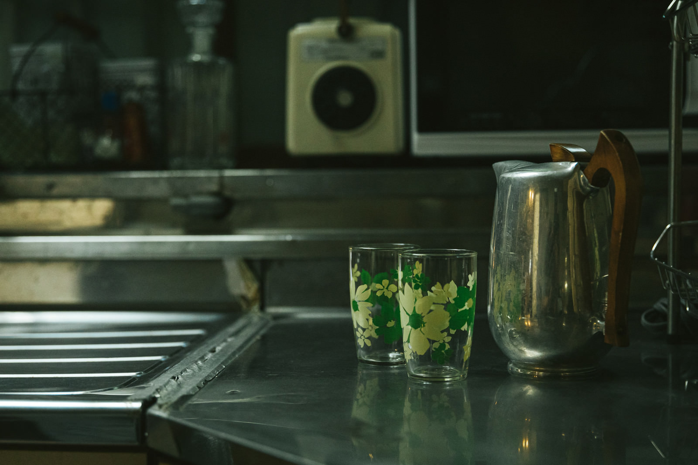
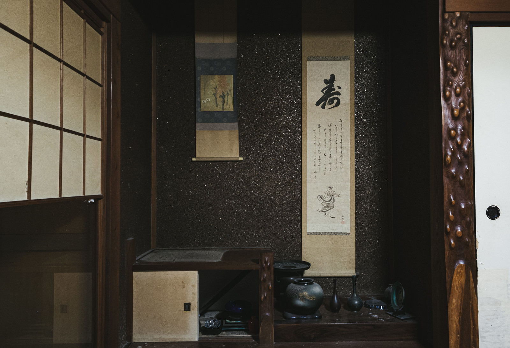
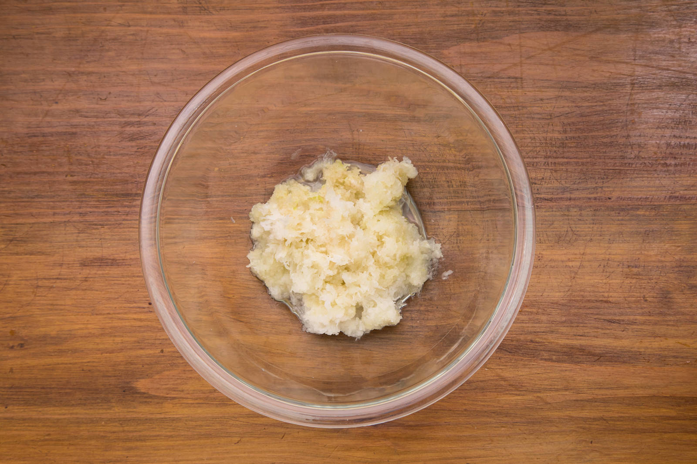
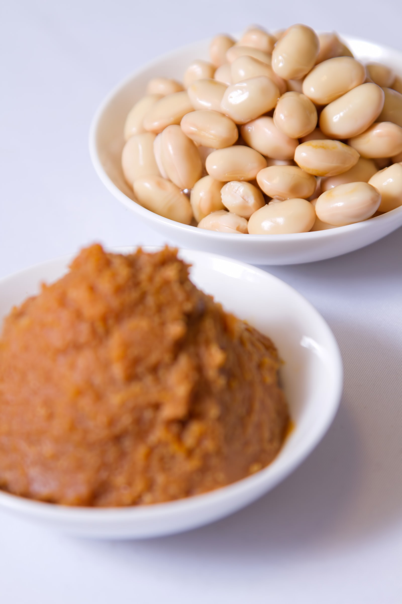
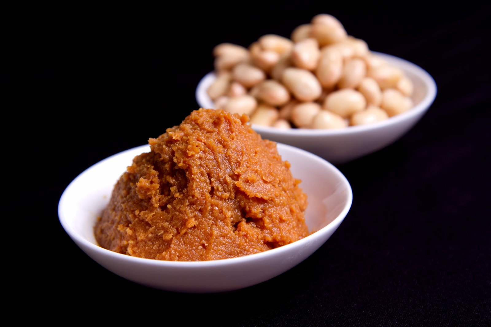

壱
記憶
昔、祖母が仕込んでいた味噌桶の匂いを覚えている。
寒い朝、湯気の向こうに祖母の背中があった。
二十四節気とともにめぐる、食べる暦。
代々受け継がれた発酵の知恵と、二十四節気の暮らし方。
薬膳味噌ブランド「暦みそ ―KOYOMI―」
今だけ｜二十四節気の薬膳味噌汁レシピ12選をプレゼント中
朝の身支度に、少し時間がかかるようになった。
季節が変わるたびに、なんとなく体が重い。
「体にいいこと」はしたい、でも忙しくて凝ったことまでは手が回らない——
一つでも心当たりがあれば、それは特別なことではありません。
毎日の食卓が、少しだけ季節から遠ざかっているだけ。
暦とともにめぐる、一杯のお味噌汁から始めてみませんか。
季節の巡りに合わせて、その時期の体に合う食材を選ぶ。
それだけで、薬膳はもう始まっています。
二十四節気は、先人たちが遺した「食べる暦」なのです。

昔、祖母が仕込んでいた味噌桶の匂いを覚えている。
寒い朝、湯気の向こうに祖母の背中があった。

二十四節気という、日本人が千年以上大切にしてきた暦。
その日その日の「食べる知恵」が、今の暮らしから静かに消えかけている。

九州の小さな味噌蔵で、杜氏が語ってくれた言葉。
「味噌は、待つことでしか生まれない。」
一杯の味噌汁から、今日という季節を感じてほしい。
それが、暦みそが届けたい暮らしです。
この物語をもっと知りたい方へ。二十四節気の薬膳レシピ帖を無料でお届けしています。
LINEで暦のレシピ帖を受け取る

昔ながらの木桶でじっくりと時間をかけて仕込む製法。派手な演出は必要ありません。素材そのものが持つ力を、丁寧な手間で引き出しています。
薬膳のある暮らしを、今日から少しずつ。
薬膳のある暮らしを始める味噌の発酵過程では、麹菌の働きにより大豆のタンパク質がアミノ酸に分解され、うま味と栄養価がともに高まることが知られています。
※一般的な味噌の発酵に関する知見をもとに紹介しています。効果を保証するものではありません。若菜と味噌のやさしい一杯。芽吹きの季節に寄り添う味わい。
生姜を効かせた、汗ばむ季節の一杯。
根菜をたっぷり、実りの季節を味わう一杯。
かぼちゃと味噌の、体を温める一杯。
【無料】暦のレシピ帖
二十四節気の薬膳味噌汁レシピ12選
各節気に合わせた味噌汁レシピをまとめたPDFです。「今日は何の節気か」がひと目でわかる暦カレンダー付き。献立に迷ったときのお守りとして、そのまま保存してお使いいただけます。
売り込みばかりのLINEではありません。「今日という季節」にまつわる話を、無理のないペースでお届けします。もちろん、いつでもブロックしていただいて構いません。
暦のレシピ帖を無料でもらう（公式LINE登録）「朝の一杯が、季節を感じる時間になりました。」
「暦を意識するようになって、食卓が楽しくなりました。」
二十四節気に合わせた薬膳レシピや、味噌蔵の様子など、暮らしにまつわる話をゆっくりお届けします。
目安として月に2〜4回程度、季節の変わり目を中心にお届けします。
LINE登録・レシピ帖の受け取りはすべて無料です。
はい、いつでもブロックしていただけます。無理な引き止めは一切ありません。
※プレゼントPDFは、LINEの仕様変更により予告なく終了する場合がございます。気になった今のうちにお受け取りください。
特別なことをしなくていい。難しい知識もいりません。
二十四節気とともにめぐる、一杯の味噌汁から。
その暮らしの豊かさを、今日はあなたに少しだけおすそ分けさせてください。
登録者限定・二十四節気の薬膳味噌汁レシピ12選プレゼント中